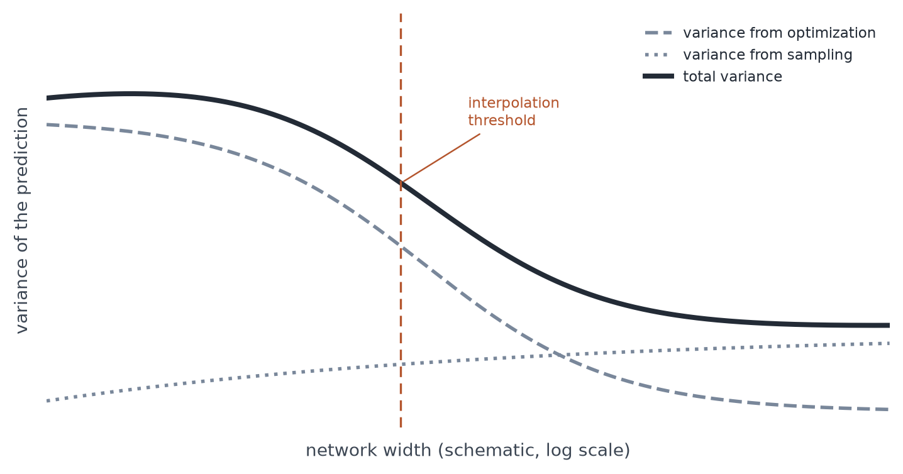

Classical generalization theory gives held-out error a settled shape: as a model gains capacity, error falls, reaches a minimum, and rises again; the bias-variance tradeoff sets where the turn happens, and validation finds it. Networks trained past that point defy the shape. They fit their training samples exactly, noise included, and still predict held-out data well; their held-out error can fall a second time after a rise near perfect fitting—a pattern now called double descent [1]. Near the interpolation threshold, where capacity first suffices to fit every training point, the fit is brittle and held-out error can spike; beyond it, many exact fits exist, and the training procedure chooses among them. Parameter count, the classical proxy for capacity, is a poor guide to what these trained systems actually do.
Language models sit on the same axis with complications of their own. They are neural sequence predictors fitted on raw text [2], steered toward new tasks by instructions alone or by examples placed in the input [3, 4]. Zero-shot and in-context learning made the prompt itself the interface. Assistants add supervised fine-tuning [5] and training against human preferences or verifiable rewards [6]. The statistical surprises reappear, sharper: double descent has been mapped as a joint property of capacity and training time [7, 8], and small algorithmic tasks supplied the cleanest departure—a network that fits first and generalizes only after many further steps, a delay known as grokking [9].
At scale, the prompt-facing measurements turn volatile. Chain-of-thought prompting exposes intermediate steps that a single answer hides [10], and some benchmark scores sit near chance and then rise steeply—emergent abilities [11]—though a discontinuous metric can make a gradual underlying change look sudden [12]. The smooth measurements live elsewhere: average loss on held-out text declines predictably across orders of magnitude of compute. The same model looks volatile through one instrument and steady through the other. Compute spent at test time—several attempts, search, verification—has become a budget of its own, one that post-training against verifiable rewards [6] can teach a system to use. Evaluation follows the same shift: reasoning traces, checkable outcomes, and multi-step tool use need measurement beyond a single label comparison. A response can follow every instruction in the prompt and still misstate the situation it concerns, so correctness becomes, in part, a deployment decision.
This article follows the thread through the systems that produced it—deep networks and the Transformer [13]—from the first anomaly to the newest budget. It opens with the experiments that broke the U-curve—AlexNet, Zhang, Neal, Belkin, Nakkiran—and looks inside the mechanisms that make exact fits survivable: implicit regularization, the delayed compression behind grokking, the geometry of the interpolation spike, and benign overfitting. It turns next to scale, where volatile emergence and the smooth Chinchilla horizon disagree, and closes with test-time compute and the playbook it implies: what changes for practitioners when error becomes dynamic, and where capability can live—in the weights, in low-rank adaptations, or in inference-time search.
1. AlexNet and the limit of the U-curve
A Welch Labs video on double descent [17] sent me back to AlexNet’s 2012 ImageNet result. The network had about 60 million parameters and learned from roughly 1.2 million labeled images [14]. Under the classical account, that ratio should have been a warning: a model with more parameters than examples has enough freedom to memorize the training set. AlexNet won the challenge anyway. One model cannot trace a curve, but the result put pressure on a familiar expectation. If size meant a greater risk of overfitting, why was this model so effective?
Classical statistical learning states this expectation more formally. Generalization error—the error a model makes on unseen samples rather than the ones it trained on—is governed by the bias-variance tradeoff. Bias is the error of a model too simple to represent the pattern; variance is its sensitivity to the particular training sample, including noise that will not repeat. The first is underfitting, the second overfitting. As parameters are added, bias usually falls at first; past a point, variance rises faster than bias falls, and held-out error traces the familiar U-shaped curve. AlexNet looked like a violation. A natural first explanation was explicit regularization: dropout, weight decay, and data augmentation were holding variance down, on the assumption that 60 million parameters would otherwise memorize the training set [14].
Zhang and colleagues tested that explanation directly [15]. They replaced the image labels with random labels, leaving no learnable pattern, and trained convolutional networks on the result. The networks still reached zero training error. A model that can fit random labels has enough capacity to memorize its training set, with or without explicit regularizers. The other half of the experiment used the true labels. There, networks of the same kind generalized to held-out images even when the standard regularizers were removed [15]. Regularization remained a useful tuning knob. The reconciliation came from measuring variance directly: Neal and colleagues compared fully connected networks of different widths and found that prediction variance fell as the networks widened—the opposite of what the classical picture predicts [16]. More parameters did not mean more prediction variance.
The schematic below shows the trend.

Schematic of Neal et al.’s width experiments [16]: total prediction variance falls as networks widen. The vertical line marks the interpolation threshold; the curves show trends, not measured values.
Belkin and colleagues compared models across sizes and found settings where held-out error fell again after a model could fit the training set [1]. Nakkiran and colleagues saw related patterns when they varied model size and, separately, training time [8]. In this broader picture, the classical U-curve is the left-hand side of a longer trajectory. At the interpolation threshold, capacity is just enough to force training error to zero. The fit there is brittle. It is pinned to every training point, with little redundancy left to average away noise, so a small change in the sample can move predictions sharply; held-out error spikes. Push past that point, and a family of zero-error fits exists. The optimizer’s implicit preference among them—toward smoother or lower-norm solutions—can produce better held-out error. This full trajectory—a first descent, a peak at interpolation, and a second descent—is known as double descent [1, 8]. How pronounced that peak is, and whether it appears at all, has to be measured rather than assumed.
The two panels below place the classical curve beside that trajectory.

The classical picture (left) and a possible double-descent trajectory (right). Left: expected error against model flexibility, with bias and variance. Right: training error (dashed) reaches zero at the interpolation threshold while held-out error (solid) can spike and then fall again. Both panels are schematics, not AlexNet measurements. After Belkin et al. [1] and Nakkiran et al. [8].
The peak is not universal. With cleaner labels, Nakkiran and colleagues sometimes found a plateau near interpolation instead of a spike [8], and the shape depends on the data, model family, and training budget. A single model, AlexNet included, cannot establish it. To look for double descent, train a range of model sizes on the same data and plot training and held-out error together, marking where training error first reaches zero; then ask whether held-out error rises and falls again. If training time is the variable, the comparison is different and the axis should say so.
Original figures: The images above are schematics, not reproductions. For measured results, see Zhang et al. (PDF), Neal et al. (PDF), Belkin et al. (paper), and Nakkiran et al. (PDF).
2. Under the Hood: Why Double Descent Actually Happens
Polynomial curve fitting gives the cleanest picture of the interpolation threshold. Suppose we observe eight distinct input values \(x_i\) and their targets \(y_i\). A polynomial of degree at most seven threads all eight points. Allow one more degree, and nothing pins the fit down anymore: there are more coefficients than observations. If \(p_7(x)\) fits the eight points, so does
\[p_c(x)=p_7(x)+c\prod_{i=1}^{8}(x-x_i),\]
for any value of \(c\). The added term vanishes exactly at the observed inputs, so every member of the family is an exact fit; between the points, the curves are free to disagree. An exact training fit does not identify a prediction at a new input.
The graph below shows three fits of the same eight points.

The eight observed points admit more than one exact fit. The dashed curve is the unique degree-7 interpolant; the two solid curves add the term \(c\prod_{i=1}^{8}(x-x_i)\) for different values of \(c\). All three pass through every point and disagree between them. A constructed example, not measured data.
The data cannot choose among these curves: every member fits the eight points exactly and carries the same zero training loss. The training procedure chooses, and its preference is not arbitrary: it favors the smooth, low-norm members of the family over the brittle, wiggly ones. Change the starting point, the regularization, or the parameterization, and a different member wins.
The graph below shows the full family of exact fits.

The full family of exact fits for the same eight points: one curve per value of \(c\), all passing through every observed point. The highlighted member is the smoothest one—the kind of fit the training procedure’s preference tends toward; its neighbors trade smoothness for brittle wiggles. A constructed example, not measured data.
Inside a deep neural network there is no closed-form \(p_c\) to consult: the training dynamics choose among the zero-error fits, and they are far messier than a polynomial family. Three mechanisms do most of the explaining.
Start with the optimizer’s own preference. Even with every explicit penalty switched off, gradient descent does not wander blindly through the zero-error fits: started near zero, it drifts toward solutions of the smallest magnitude—an effect known as implicit regularization. For linear classifiers on separable data, Soudry and colleagues proved the limit: the iterates converge in direction to the maximum-margin separator [18].
The same dynamic, stretched over training time, shows up in grokking. Power and colleagues trained networks on small algorithmic tasks and watched training accuracy approach perfection while validation stayed at chance—then, after many further steps, validation suddenly improved [9]. Liu and colleagues trace the late shift to compression: a bulky, high-norm memorizing circuit gives way to a smaller, generalizing one [19]. One model, two regimes—epoch-wise double descent.
Why does the error spike right before the calm? At the interpolation threshold, a linear fit has to invert a nearly singular matrix. Hastie and colleagues worked out the high-dimensional geometry: the smallest singular values—the directions in which the data vary least—collapse toward zero, and fitting means dividing by them, which amplifies the tiniest label noise into a large swing [20]. Move well past the threshold and the geometry turns favorable: the directions that overparameterization adds lift those singular values off zero, and predictions stabilize. The geometry is exact for linear least squares and an analogy for deep networks; it explains why the spike lands exactly where training error first reaches zero.
Some noise does get memorized, and the last mechanism explains why that memorization stays benign. In the theory of benign overfitting, Bartlett and colleagues split a model’s capacity in two: a few dominant directions carry the signal, while a long tail of small, low-variance directions soaks up the noise [21]. New inputs barely touch the tail, so the stored noise contributes almost nothing to the prediction. Fit the noise, generalize anyway.
The phase shift that appears in grokking—noisy memorization giving way to consolidated, low-norm circuits—is the structural foundation of modern Parameter-Efficient Fine-Tuning (PEFT). A pre-trained language model consolidates its core world knowledge the same way, onto a remarkably low-dimensional manifold [22]. One architectural consequence follows directly: adapting such a model to a new domain, or updating its facts, modifies a low-rank slice of its weights rather than retraining all of them. Low-rank adapters (LoRA) injected into the model’s projections steer the consolidated knowledge surgically [23]. Once compression has done its work, a fraction of the model’s degrees of freedom suffices for adaptation—an economy that holds at billion-parameter scale.
3. The Tension of Scale: Volatile Emergence vs. the Chinchilla Horizon
A model’s average next-token loss may improve steadily while its answers to a particular request get worse. These are different measurements. To describe the second, let \(X\) be the context, \(T\) the task specified in the prompt, and \(Y\) the answer being evaluated. We can study a task outcome through \(\mathbb{E}[Y \mid X,T]\) when \(Y\) is a numeric score; for generated text, the model instead assigns probabilities to possible responses. Radford and colleagues showed that a single language model could be directed toward several tasks through text without updating its weights [3]. The task changes with the prompt, even when the model does not.
Wei and colleagues called a capability emergent when its measured performance was near chance for smaller models and substantially higher for larger ones [11]. Their examples concern specific prompted benchmarks; no single threshold governs the acquisition of every new skill. The result is nonetheless important: knowing that a model has lower average prediction loss does not tell us how well it will handle a particular request.

Eight prompted-task benchmarks across model families; several scores rise after a low-scoring range. Figure from Schaeffer, Miranda and Koyejo, reproducing results from Wei et al. [11]; also shown on ResearchGate. The horizontal axis is training FLOPs; the scores describe behavior, leaving the mechanism open.
Some requests reveal an even less orderly curve. McKenzie and colleagues assembled eleven datasets on which task performance could decrease as model scale increased, calling the pattern inverse scaling [24]. Their analysis identified several possible sources, including a misleading but easier task embedded in the prompt and demonstrations that encourage the wrong continuation. The finding is local to the task and its evaluation: particular prompts can expose failures that aggregate loss conceals.
Wei, Kim, Tay and Le then re-examined those eleven tasks using larger models [25]. On six, performance first fell and later recovered; four still showed inverse scaling, while one improved throughout. Expressed as error, the recovering tasks trace a rise and then a fall across the sizes examined. The curve mirrors the recovery phase of double descent visually, though without an established interpolation threshold or shared mechanism. In these evaluations, scale, training, and the prompt interact, and the proposed distractor explanation covers only part of the reversal.
Even the apparent sharpness of a jump needs care. Schaeffer and colleagues showed that discontinuous scores, such as exact match, can turn smooth changes in underlying answer probabilities into an abrupt-looking benchmark curve [12]. For a multi-step answer, the probability of each correct token, \(P(y_t\mid y_{<t},X,T)\), may increase without the whole response crossing the exact-match boundary. The jump can still reflect meaningful new behavior; a plotted threshold leaves open whether the internal change was sudden or gradual.
The other measurement is average loss on held-out text, and it declines. How can zero-shot and few-shot performance look so volatile while pre-training loss remains so forecastable? Part of the answer is the training regime. A classical benchmark cycles over a finite dataset until the model fits it, and that exact fit is what produces the interpolation peak of Chapter 1. Frontier language models instead train in a streaming regime over trillions of tokens, rarely reading the same sequence twice. With no fixed sample to fit again and again, the finite-data interpolation wall never forms. What remains is a smooth trend in the aggregate loss as model size and training tokens change. Repetition does occur and language models can overfit; within the measured range, the loss remains predictable.
In Training Compute-Optimal Large Language Models, Hoffmann and colleagues fitted that trend for transformer language models [26]. Their relation, commonly called the Chinchilla scaling law, predicts the expected loss of a planned run before training begins:
\[L(N,D)=E+\frac{A}{N^{\alpha}}+\frac{B}{D^{\beta}}.\]
Here \(N\) counts non-embedding parameters, \(D\) counts training tokens, and \(L\) is the expected cross-entropy loss. The fitted floor \(E\) summarizes what remains in this model of the data; it should not be read as a universal constant for natural language. The parameter and data terms decline as power laws with exponents of about \(\alpha=0.34\) and \(\beta=0.28\). The relation is an empirical fit to aggregate loss, valid within the studied tasks, distributions, and scale range.
Using the approximate training-compute relation \(C\approx6ND\), the fit favors increasing tokens and parameters together when training loss under a fixed training budget is the objective. The Chinchilla experiments put the useful balance near 20 training tokens per parameter in their setting [26]. That ratio is a reference for the training-compute objective; it leaves out the cost of serving the model repeatedly after training.

Token-to-parameter ratios for selected models, drawn from the estimates compiled by Alan D. Thompson, LifeArchitect.ai (December 2023). This is an annotated comparison, not Hoffmann et al.’s fitted loss surface: some model values are estimates, and moving to the right does not by itself imply a poor deployment choice.
A compact model can therefore be trained on substantially more data than the training-compute optimum would suggest. Llama 3 8B was trained on more than 15 trillion tokens [27], roughly 90 times the 20-token-per-parameter reference ratio. This over-training spends more compute before deployment in exchange for a smaller model to serve. It can improve a compact model’s performance; whether a particular emergent threshold was crossed must be checked on the prompted task.
A second trade happens after training. A single generation produces one sample from the model’s next-token distribution, and pass@1 scores that one attempt [28]. Inference-time compute buys more attempts: generate N candidate answers and select among them. Where the task admits an automatic check—unit tests, an exact answer—a trained verifier can rank the candidates, and returning the highest-scored sample is best-of-N selection [29]. For reasoning tasks, sampling several chains of thought and returning the majority answer needs no learned verifier at all; the approach is called self-consistency [30]. The weights stay fixed in every scheme; what varies is how many samples the system buys and how it chooses between them.
Selection can operate below the level of the full answer. A step-level verifier—a process reward model scoring each intermediate step—lets the system prune failing branches and continue along the rest, turning a single pass into a search over reasoning paths. The trade is explicit: extra tokens and latency buy additional attempts or deeper search, and the returns concentrate on verifiable tasks. Without a reliable check, more samples reproduce the same errors at higher cost.
The effect on error is structural. At fixed weights, a larger inference budget changes the distribution over answers and, on verifiable tasks, reduces the variance across attempts: under a latency and cost constraint, correctness becomes partly purchasable. Snell and colleagues found that allocating the budget well can substitute for model scale within their studied setting, surpassing a model fourteen times larger at matched compute on problems the base model already solves some of the time [31]. The behavior being scaled can itself be trained: DeepSeek-R1 was optimized against verifiable rewards, and the resulting policy produces longer, self-checking reasoning traces [6]. The pre-training law and the inference budget measure different quantities—the law forecasts the loss of the model being trained, while accuracy on a prompted task depends on how that model is queried and checked.
4. The New Playbook: From Static Error to Dynamic Intelligence
For decades, classical statistical learning trained data scientists to treat capacity as a hazard: add just enough parameters to capture the signal, clamp down with aggressive regularization, and stop when validation error first turns upward. The arc of this article—from AlexNet and double descent through grokking, the Chinchilla scaling law, and emergent abilities—shows the limits of that posture. Overparameterization supplies the headroom, and compression does the rest: gradient descent turns noisy memorization into smooth, low-norm latent structure. That structure is what low-rank adapters exploit to steer a model surgically, and what lets the prompt specify a new task without touching the weights—the conditional expectation \(\mathbb{E}[Y \mid X,T]\) of Chapter 3.
For practitioners, this changes what held-out error is. In the classical picture, it was a static number, fixed in the weights once training ended. It is now dynamic at three levels. At the macro level, single-pass streaming and inference-optimal over-training move along predictable power-law horizons. At the task level, performance can fall and later recover across scale, and a discontinuous metric can make a gradual gain look sudden. At runtime, reasoning models that search, verify, and backtrack make test-time compute an active dial for reducing error—when the task and the checking support it.
The builder’s habits change with it. Report continuous token log-loss beside exact-match scores during and after training: the first declines smoothly as circuits form, while the second stalls and then jumps, so reading only the second turns steady progress into apparent failure. A stubborn validation plateau can precede a late drop; treat it as a phase worth measuring through its later steps. For prediction under a defined sampling process, cross-validation, RMSE, and AUC remain the right instruments. When the unit of evaluation becomes a trajectory—an agent calling tools, changing state, and acting across steps—the outcome and the constraint checks are where correctness shows up. Above all, the work shifts from tuning a static equation to architecting compute allocation—deciding where capability lives: compressed into the weights during pre-training, steered through low-rank updates after training, or searched and verified at the moment of inference. The old safeguards keep their place; evaluation now covers trajectories as well as predictions.
References
- Belkin, M., Hsu, D., Ma, S. and Mandal, S. (2019). “Reconciling modern machine-learning practice and the bias–variance trade-off.” https://www.pnas.org/doi/10.1073/pnas.1903070116
- Bengio, Y., Ducharme, R., Vincent, P. and Jauvin, C. (2003). “A Neural Probabilistic Language Model.” https://www.jmlr.org/papers/v3/bengio03a.html
- Radford, A. et al. (2019). “Language Models are Unsupervised Multitask Learners.” https://cdn.openai.com/better-language-models/language_models_are_unsupervised_multitask_learners.pdf
- Brown, T. B. et al. (2020). “Language Models are Few-Shot Learners.” https://arxiv.org/abs/2005.14165
- Ouyang, L. et al. (2022). “Training language models to follow instructions with human feedback.” https://arxiv.org/abs/2203.02155
- DeepSeek-AI (2025). “DeepSeek-R1 incentivizes reasoning in LLMs through reinforcement learning.” https://www.nature.com/articles/s41586-025-09422-z
- Lafon, M. and Thomas, A. (2024). “Understanding the Double Descent Phenomenon in Deep Learning.” https://arxiv.org/abs/2403.10459
- Nakkiran, P. et al. (2020). “Deep Double Descent: Where Bigger Models and More Data Hurt.” https://arxiv.org/abs/1912.02292
- Power, A. et al. (2022). “Grokking: Generalization Beyond Overfitting on Small Algorithmic Datasets.” https://arxiv.org/abs/2201.02177
- Wei, J. et al. (2022). “Chain-of-Thought Prompting Elicits Reasoning in Large Language Models.” https://arxiv.org/abs/2201.11903
- Wei, J. et al. (2022). “Emergent Abilities of Large Language Models.” https://arxiv.org/abs/2206.07682
- Schaeffer, R., Miranda, B. and Koyejo, S. (2023). “Are Emergent Abilities of Large Language Models a Mirage?” https://arxiv.org/abs/2304.15004
- Vaswani, A. et al. (2017). “Attention Is All You Need.” https://arxiv.org/abs/1706.03762
- Krizhevsky, A., Sutskever, I. and Hinton, G. E. (2012). “ImageNet Classification with Deep Convolutional Neural Networks.” https://papers.nips.cc/paper_files/paper/2012/hash/c399862d3b9d6b76c8436e924a68c45b-Abstract.html
- Zhang, C., Bengio, S., Hardt, M., Recht, B. and Vinyals, O. (2017). “Understanding deep learning requires rethinking generalization.” https://arxiv.org/abs/1611.03530
- Neal, B., Mittal, S., Baratin, A., Tantia, V., Scicluna, M., Lacoste-Julien, S. and Mitliagkas, I. (2019). “A Modern Take on the Bias-Variance Tradeoff in Neural Networks.” https://arxiv.org/abs/1810.08591
- Welch Labs (2025). “What the Books Get Wrong about AI [Double Descent].” YouTube. https://www.youtube.com/watch?v=z64a7USuGX0
- Soudry, D., Hoffer, E., Nacson, M. S., Gunasekar, S. and Srebro, N. (2018). “The Implicit Bias of Gradient Descent on Separable Data.” Journal of Machine Learning Research 19(70), 1–57. https://arxiv.org/abs/1710.10345
- Liu, Z., Kitouni, O., Nolte, N., Michaud, E. J., Tegmark, M. and Williams, M. (2022). “Towards Understanding Grokking: An Effective Theory of Representation Learning.” Advances in Neural Information Processing Systems 35, 34651–34663. https://arxiv.org/abs/2205.10343
- Hastie, T., Montanari, A., Rosset, S. and Tibshirani, R. J. (2022). “Surprises in High-Dimensional Ridgeless Least Squares Interpolation.” The Annals of Statistics 50(2), 949–986. https://arxiv.org/abs/1903.08560
- Bartlett, P. L., Long, P. M., Lugosi, G. and Tsigler, A. (2020). “Benign Overfitting in Linear Regression.” Proceedings of the National Academy of Sciences 117(48), 30063–30070. https://arxiv.org/abs/1906.11300
- Aghajanyan, A., Zettlemoyer, L. and Gupta, S. (2021). “Intrinsic Dimensionality Explains the Effectiveness of Language Model Fine-Tuning.” Proceedings of the 59th Annual Meeting of the Association for Computational Linguistics (ACL), 7319–7328. https://arxiv.org/abs/2012.13255
- Hu, E. J., Shen, Y., Wallis, P., Allen-Zhu, Z., Li, Y., Wang, S., Wang, L. and Chen, W. (2022). “LoRA: Low-Rank Adaptation of Large Language Models.” International Conference on Learning Representations (ICLR). https://arxiv.org/abs/2106.09685
- McKenzie, I. R. et al. (2023). “Inverse Scaling: When Bigger Isn’t Better.” Transactions on Machine Learning Research. https://arxiv.org/abs/2306.09479
- Wei, J., Kim, N., Tay, Y. and Le, Q. V. (2023). “Inverse Scaling Can Become U-Shaped.” Transactions on Machine Learning Research. https://arxiv.org/abs/2211.02011
- Hoffmann, J. et al. (2022). “Training Compute-Optimal Large Language Models.” Advances in Neural Information Processing Systems 35, 30016–30030. https://arxiv.org/abs/2203.15556
- Dubey, A. et al. (2024). “The Llama 3 Herd of Models.” arXiv. https://arxiv.org/abs/2407.21783
- Chen, M. et al. (2021). “Evaluating Large Language Models Trained on Code.” arXiv. https://arxiv.org/abs/2107.03374
- Cobbe, K. et al. (2021). “Training Verifiers to Solve Math Word Problems.” arXiv. https://arxiv.org/abs/2110.14168
- Wang, X. et al. (2023). “Self-Consistency Improves Chain of Thought Reasoning in Language Models.” International Conference on Learning Representations (ICLR). https://arxiv.org/abs/2203.11171
- Snell, C., Lee, J., Xu, K. and Kumar, A. (2024). “Scaling LLM Test-Time Compute Optimally can be More Effective than Scaling Model Parameters.” arXiv. https://arxiv.org/abs/2408.03314